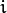
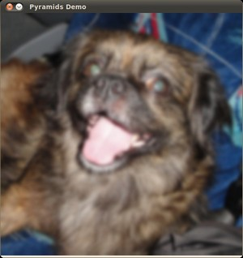

Image Pyramids¶
Goal¶
In this tutorial you will learn how to:
Theory¶
Note
The explanation below belongs to the book Learning OpenCV by Bradski and Kaehler.
- Usually we need to convert an image to a size different than its original. For this, there are two possible options:
- Upsize the image (zoom in) or
- Downsize it (zoom out).
- Although there is a geometric transformation function in OpenCV that -literally- resize an image (resize, which we will show in a future tutorial), in this section we analyze first the use of Image Pyramids, which are widely applied in a huge range of vision applications.
Image Pyramid¶
- An image pyramid is a collection of images - all arising from a single original image - that are successively downsampled until some desired stopping point is reached.
- There are two common kinds of image pyramids:
- Gaussian pyramid: Used to downsample images
- Laplacian pyramid: Used to reconstruct an upsampled image from an image lower in the pyramid (with less resolution)
- In this tutorial we’ll use the Gaussian pyramid.
Gaussian Pyramid¶
Imagine the pyramid as a set of layers in which the higher the layer, the smaller the size.

Every layer is numbered from bottom to top, so layer (denoted as is smaller than layer  ().
To produce layer in the Gaussian pyramid, we do the following:
Convolve with a Gaussian kernel:
Remove every even-numbered row and column.
You can easily notice that the resulting image will be exactly one-quarter the area of its predecessor. Iterating this process on the input image (original image) produces the entire pyramid.
The procedure above was useful to downsample an image. What if we want to make it bigger?:
- First, upsize the image to twice the original in each dimension, wit the new even rows and columns filled with zeros (
 )
) - Perform a convolution with the same kernel shown above (multiplied by 4) to approximate the values of the “missing pixels”
- First, upsize the image to twice the original in each dimension, wit the new even rows and columns filled with zeros (
These two procedures (downsampling and upsampling as explained above) are implemented by the OpenCV functions pyrUp and pyrDown, as we will see in an example with the code below:
Note
When we reduce the size of an image, we are actually losing information of the image.
Code¶
This tutorial code’s is shown lines below. You can also download it from here
#include "opencv2/imgproc/imgproc.hpp"
#include "opencv2/highgui/highgui.hpp"
#include <math.h>
#include <stdlib.h>
#include <stdio.h>
using namespace cv;
/// Global variables
Mat src, dst, tmp;
char* window_name = "Pyramids Demo";
/**
* @function main
*/
int main( int argc, char** argv )
{
/// General instructions
printf( "\n Zoom In-Out demo \n " );
printf( "------------------ \n" );
printf( " * [u] -> Zoom in \n" );
printf( " * [d] -> Zoom out \n" );
printf( " * [ESC] -> Close program \n \n" );
/// Test image - Make sure it s divisible by 2^{n}
src = imread( "../images/chicky_512.jpg" );
if( !src.data )
{ printf(" No data! -- Exiting the program \n");
return -1; }
tmp = src;
dst = tmp;
/// Create window
namedWindow( window_name, CV_WINDOW_AUTOSIZE );
imshow( window_name, dst );
/// Loop
while( true )
{
int c;
c = waitKey(10);
if( (char)c == 27 )
{ break; }
if( (char)c == 'u' )
{ pyrUp( tmp, dst, Size( tmp.cols*2, tmp.rows*2 ) );
printf( "** Zoom In: Image x 2 \n" );
}
else if( (char)c == 'd' )
{ pyrDown( tmp, dst, Size( tmp.cols/2, tmp.rows/2 ) );
printf( "** Zoom Out: Image / 2 \n" );
}
imshow( window_name, dst );
tmp = dst;
}
return 0;
}
Explanation¶
Let’s check the general structure of the program:
Load an image (in this case it is defined in the program, the user does not have to enter it as an argument)
/// Test image - Make sure it s divisible by 2^{n} src = imread( "../images/chicky_512.jpg" ); if( !src.data ) { printf(" No data! -- Exiting the program \n"); return -1; }
Create a Mat object to store the result of the operations (dst) and one to save temporal results (tmp).
Mat src, dst, tmp; /* ... */ tmp = src; dst = tmp;
Create a window to display the result
namedWindow( window_name, CV_WINDOW_AUTOSIZE ); imshow( window_name, dst );
Perform an infinite loop waiting for user input.
while( true ) { int c; c = waitKey(10); if( (char)c == 27 ) { break; } if( (char)c == 'u' ) { pyrUp( tmp, dst, Size( tmp.cols*2, tmp.rows*2 ) ); printf( "** Zoom In: Image x 2 \n" ); } else if( (char)c == 'd' ) { pyrDown( tmp, dst, Size( tmp.cols/2, tmp.rows/2 ) ); printf( "** Zoom Out: Image / 2 \n" ); } imshow( window_name, dst ); tmp = dst; }
Our program exits if the user presses ESC. Besides, it has two options:
Perform upsampling (after pressing ‘u’)
pyrUp( tmp, dst, Size( tmp.cols*2, tmp.rows*2 )
We use the function pyrUp with 03 arguments:
- tmp: The current image, it is initialized with the src original image.
- dst: The destination image (to be shown on screen, supposedly the double of the input image)
- Size( tmp.cols*2, tmp.rows*2 ) : The destination size. Since we are upsampling, pyrUp expects a size double than the input image (in this case tmp).
Perform downsampling (after pressing ‘d’)
pyrDown( tmp, dst, Size( tmp.cols/2, tmp.rows/2 )
Similarly as with pyrUp, we use the function pyrDown with 03 arguments:
- tmp: The current image, it is initialized with the src original image.
- dst: The destination image (to be shown on screen, supposedly half the input image)
- Size( tmp.cols/2, tmp.rows/2 ) : The destination size. Since we are upsampling, pyrDown expects half the size the input image (in this case tmp).
Notice that it is important that the input image can be divided by a factor of two (in both dimensions). Otherwise, an error will be shown.
Finally, we update the input image tmp with the current image displayed, so the subsequent operations are performed on it.
tmp = dst;
Results¶
After compiling the code above we can test it. The program calls an image chicky_512.jpg that comes in the tutorial_code/image folder. Notice that this image is , hence a downsample won’t generate any error (). The original image is shown below:

First we apply two successive pyrDown operations by pressing ‘d’. Our output is:

Note that we should have lost some resolution due to the fact that we are diminishing the size of the image. This is evident after we apply pyrUp twice (by pressing ‘u’). Our output is now:

Help and Feedback
You did not find what you were looking for?- Ask a question on the Q&A forum.
- If you think something is missing or wrong in the documentation, please file a bug report.